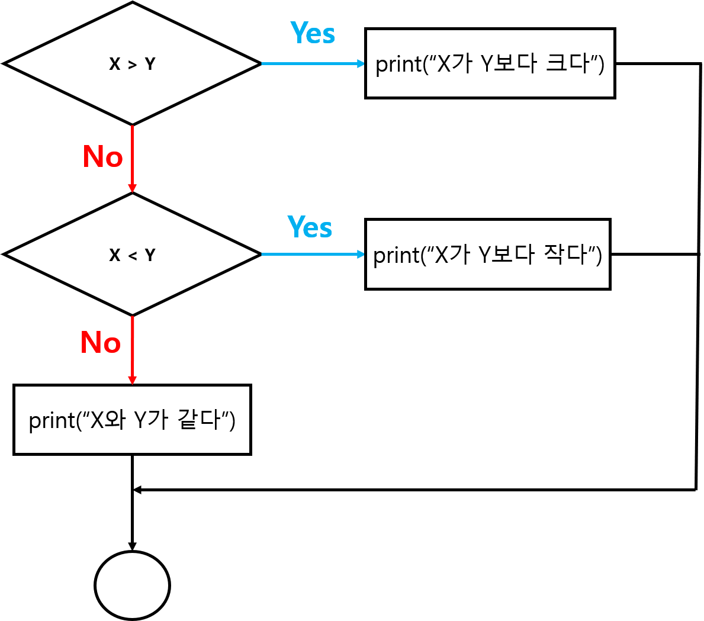

7.1 조건문(Conditionals)
if구문을 통해 조건문 생성- 불린 표현식(boolean expression): 참(
TRUE) 또는 거짓(FALSE) 두 값 중 하나로 값이 도출되는 표현식11- 비교 연산자(comparison operators)
- 같다, 같지 않다, 크다 등을 표현하기 위한 연산자
==,!=,>,<,>=,<=
- 논리 연산자(logical operator)
- AND (
&,&&), OR (|,||), NOT (!)
- AND (
- 비교 연산자(comparison operators)
x <- 10; y <- 13
# x가 2의 배수이고 y가 3의 배수
# 두 조건이 모두 참이여야 참
x %% 2 == 0 & y %% 3 == 0
# x가 2의 배수이거나 y가 3의 배수
# 두 개 조건 중 하나만 참을 만족하면 참임
x %% 2 == 0 | y %% 3 == 0
# NOT (x > y)
!(x > y) # 부정에 부정은 참[1] FALSE
[1] TRUE
[1] TRUE7.1.1 기본 구문
if (조건) 표현식
└ 괄호 안 조건을 만족하면 표현식을 실행하고 조건을 만족하지 않으면 실행하지 않음x <- 10
if (x > 0) {
print("x is positive")
}
x <- -5
if (x > 0) {
print("x is positive")
}[1] "x is positive"
Figure 7.1: if 구문 기본 flow-chart
if구문의 사용 규칙if문은 조건을 정의하는 헤더 부분((,))과 표현식이 위치하는 몸통 블록(body block,{표현식}) 으로 구성됨(,)에 표현되는 조건은 벡터가 아닌 단일 값으로 나타내야 함.{,}의 표현 또는 문장이 한 줄인 경우 블록 지정이 필요하지 않지만, 두 줄 이상인 경우if문의 범위를 지정해줘야 하기 때문에 꼭 중괄호(curly bracket,{})가 사용되야 함.
# 조건문 사용 예시
x <- c(TRUE, FALSE, FALSE)
y <- c(TRUE, TRUE, FALSE)
z <- "Both TRUE!!"
if (x[1] & y[1]) print(z) # x, y 첫 번째 원소만 사용
if (x && y) print(z) # 강제로 첫 번째 원소만 사용
if (x & y) print(z) # 경고 표시Warning in if (x & y) print(z): length > 1 이라는 조건이 있고, 첫번째 요소만이
사용될 것입니다[1] "Both TRUE!!"
[1] "Both TRUE!!"
[1] "Both TRUE!!"대안 실행(alternative execution)
- 두 가지 경우가 존재하고 조건에 따라 어떤 명령을 실행할지를 결정
if와else로 표현 가능- 조건에 따라 실행이 분기(branch) 되기 때문에
if-else구문을 분기문이라고도 함 else는if조건을 배제(exclusive)한 나머지 경우이기 때문에 조건을 따로 지정하지 않으며,if와 동일하게 중괄호 내에 표현되어야 함
x <- 9
if (x %% 2 == 0) {
print("x is even")
} else {
print("x is odd")
}[1] "x is odd"
Figure 7.2: 대안실행(if-else 구문) flow-chart
7.1.2 연쇄 조건문(chained condition)
- 두 가지 이상의 분기가 존재하는 경우 조건 표현식
- 연쇄 조건문의 표현은 아래와 같음
if (조건1) {
표현식1
...
} else if (조건2) {
표현식2
...
} else {
표현식3
...
}x <- 5; y <- 10
if (x < y) {
print("x is less than y")
} else if (x > y) {
print("x is greater than y")
} else {
print("x is equal to y")
}[1] "x is less than y"

Figure 7.3: 연쇄조건(if-else if-else 구문) flow-chart
7.1.3 중첩 조건문(nested contition)
- 하나의 조건문 내부에 하위 조건식이 존재하는 형태
if (조건1) {
표현식1
...
} else {
if (조건2) {
표현식2
...
} else {
표현식3
...
}
}x <- 10; y <- 10
if (x == y) {
print("x is equal to y")
} else {
if (x > y) {
print("x is greater than y")
} else {
print("x is less than y")
}
}[1] "x is equal to y"Figure 7.4: 중첩 조건문 flow-chart
- 중첩 조건문은 코드의 가독성을 떨어뜨리기 때문에 피하는 것을 권장
- 중첩 조건문을 피하기 위한 한 가지 방법은 논리 연산자를 활용
# 중첩조건
x <- 58
if (x > 0) {
if (x < 10) {
print("x는 한 자리 양수")
} else {
if (x < 100) {
print("x는 두 자리 양수")
} else {
print("x는 세 자리 이상 양수")
}
}
}[1] "x는 두 자리 양수"# 연쇄 조건
x <- 2020
if (x > 0 & x < 10) {
print("x는 한 자리 양수")
} else if (x >=10 & x < 100) {
print("x는 두 자리 양수")
} else {
print("x는 세 자리 이상 양수")
}[1] "x는 세 자리 이상 양수"7.1.4 ifelse() 함수
if-else구문을 사용하기 쉽게 구현된 R 내장 함수if-else구문과 다르게 조건 부분에 한 값(스칼라)이 아닌 논리형 벡터를 입력값으로 받아 조건에 따른 값(벡터)을 반환
# ifelse() 함수 인수
# help(ifelse) 참고
ifelse(
test, 조건에 따른 논리형 벡터
yes, test에 정의한 조건이 참인 경우 새로운 벡터에 대입할 값
no, test 조건이 거짓인 경우 대입할 값
)- 사용 예시
# 평균이 23이고 표준편차가 5인 정규분포로부터 30개의 난수 추출
set.seed(12345)
bmi <- rnorm(30, 23, 5)
bmi_cat <- ifelse(bmi < 25, "normal", "overweight")
bmi_cat [1] "overweight" "overweight" "normal" "normal" "overweight"
[6] "normal" "overweight" "normal" "normal" "normal"
[11] "normal" "overweight" "normal" "overweight" "normal"
[16] "overweight" "normal" "normal" "overweight" "normal"
[21] "overweight" "overweight" "normal" "normal" "normal"
[26] "overweight" "normal" "overweight" "overweight" "normal" # ifelse() 함수를 연쇄조건문 처럼 사용할 수 있다
bmi_cat2 <- ifelse(bmi < 18.5, "underweight",
ifelse(bmi < 24.9, "normal",
ifelse(bmi < 29.9, "overweight", "obesity")))
bmi_cat2 [1] "overweight" "overweight" "normal" "normal" "overweight"
[6] "underweight" "overweight" "normal" "normal" "underweight"
[11] "normal" "obesity" "normal" "overweight" "normal"
[16] "overweight" "normal" "normal" "overweight" "normal"
[21] "overweight" "obesity" "normal" "underweight" "underweight"
[26] "obesity" "normal" "overweight" "overweight" "normal" 비교 및 논리 연산자(통계프로그래밍언어 2.1.4절 참고)↩︎